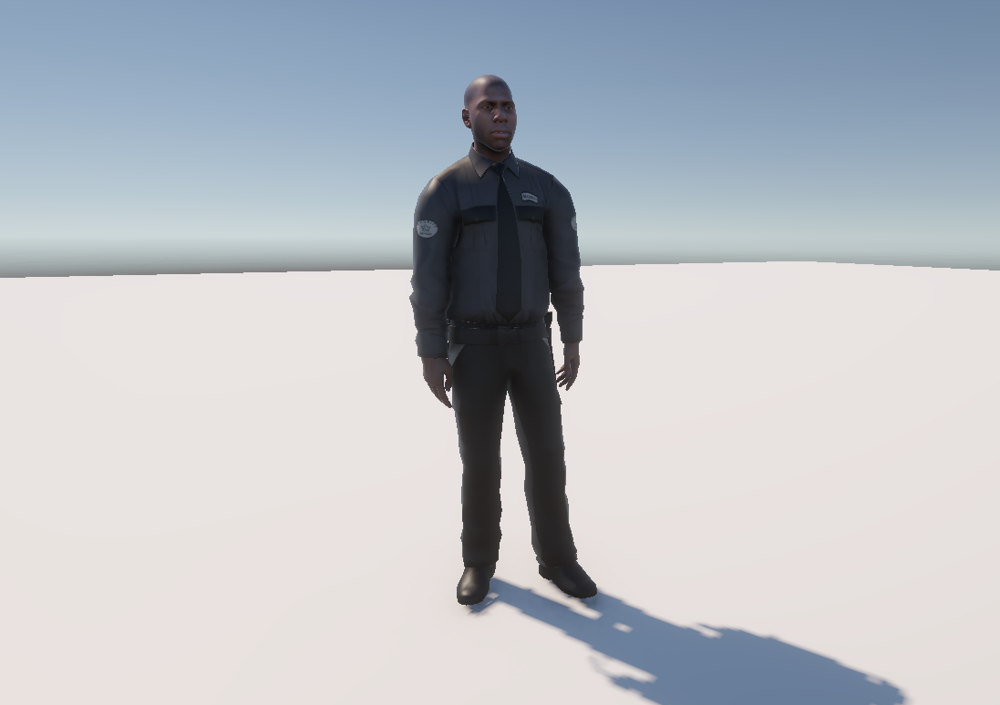
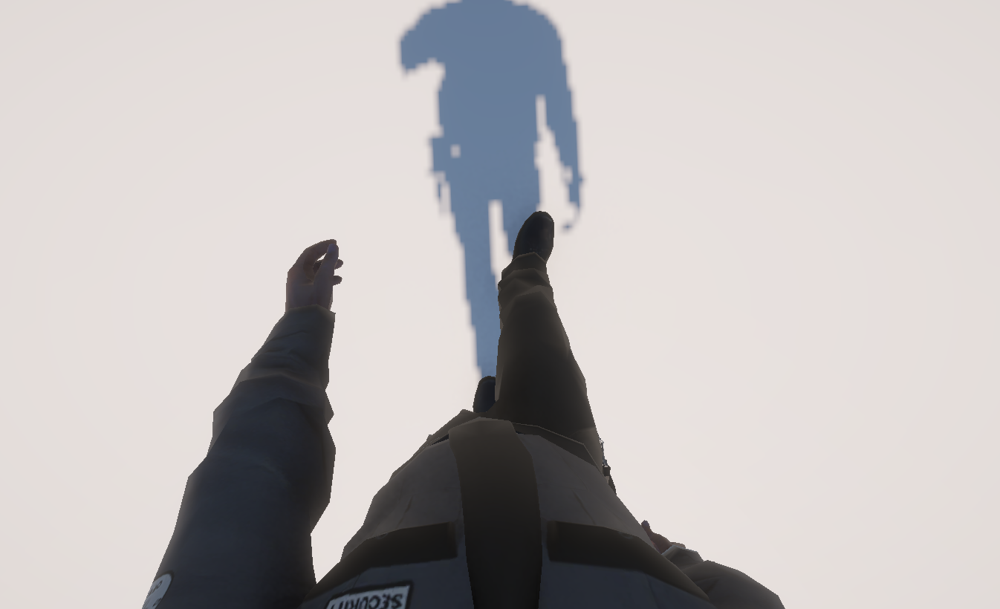

True FPS
Animation
Karakter Mekanikleri ve Gövde Görünümü
Karakterin temel hareketlerini (yürüme, koşma, eğilme ve zıplama) ayarladım. Ancak standart boş bir kamera yerine oyuncunun "orada" olduğunu hissetmesini istedim.
Yere bakıldığında gövde, eller ve ayaklar tamamen görünüyor. Ayrıca yürüme ve eğilme efektlerini (headbob/kamera sallantısı) modele entegre ettim. Karakterin kendisini ve dinamik gölge dökümünü de ortama uygun şekilde ayarladım. Şimdilik hareket hissiyatı oldukça tok oldu.

